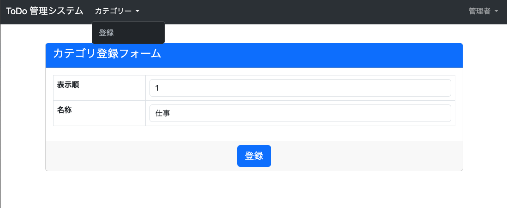

管理者機能 Category の登録
- やること
- 作成
tutorial/views.pyにユーザーと管理者のログインを要求する共通処理を作成tutorial/site_admin/forms.pyに Category 登録用のフォームを作成tutorial/site_admin/views.pyに Category 登録機能を作成tutorial/site_admin/templates/site_admin/category/create.htmlに Category 登録画面作成- 共通デザインを再利用可能に
tutorial/templates/include/form.html作成tutorial/todo/templates/todo/user_create.html変更
- 共通デザインを再利用可能に
- 変更
tutorial/site_admin/urls.pyに view を追加tutorial/templates/base.htmlにリンクを追加 (管理者ログイン時の表示を修正)
- 作成
tutorial/views.py 作成
from django.contrib.auth.decorators import login_required, user_passes_test
from django.utils.decorators import method_decorator
class LoginRequiredMixin(object):
@method_decorator(login_required)
def dispatch(self, *args, **kwargs):
return super().dispatch(*args, **kwargs)
class AdminLoginRequiredMixin(object):
@method_decorator(user_passes_test(lambda u: u.is_superuser))
def dispatch(self, *args, **kwargs):
return super().dispatch(*args, **kwargs)
tutorial/site_admin/forms.py 作成
from django import forms
from tutorial.forms import FormControlMixin
from tutorial.todo.models import Category
class CategoryCreateForm(forms.ModelForm, FormControlMixin):
class Meta:
model = Category
fields = [
'order',
'name',
]
tutorial/site_admin/views.py 作成
from django.views.generic import CreateView
from django.contrib.messages.views import SuccessMessageMixin
from django.urls import reverse_lazy
from tutorial.todo.models import Category
from tutorial.views import AdminLoginRequiredMixin
from .forms import CategoryCreateForm
class CategoryCreateView(AdminLoginRequiredMixin, SuccessMessageMixin, CreateView):
model = Category
form_class = CategoryCreateForm
success_url = reverse_lazy('index')
template_name = "site_admin/category/create.html"
success_message = "登録しました。"
tutorial/templates/include/form.html 作成
<form method="post">{% csrf_token %}
<div class="card">
<div class="card-header text-bg-primary">
<h4 class="card-title">{{ form_title }}</h4>
</div>
<div class="card-body">
<table class="table table-bordered">
{% for field in form %}
<tr {% if field.errors %}class="table-danger"{% endif %}>
<th>{{ field.label }}</th>
<td>{{ field.errors }}{{ field }}</td>
</tr>
{% endfor %}
</table>
</div>
<div class="card-footer align-center">
<button type="submit" class="btn btn-lg btn-primary">{{ submit_btn_label }}</button>
</div>
</div>
</form>
tutorial/site_admin/templates/site_admin/category/create.html 作成
{% extends "base.html" %}
{% block title %}カテゴリ登録{% endblock%}
{% block content %}
{% include 'include/form.html' with form=form form_title='カテゴリ登録フォーム' submit_btn_label='登録' csrf_token=csrf_token only %}
{% endblock %}
tutorial/todo/templates/todo/user_create.html 変更
{% extends "base.html" %}
{% block title %}新規登録{% endblock%}
{% block content %}
{% include 'include/form.html' with form=form form_title='新規登録フォーム' submit_btn_label='登録' csrf_token=csrf_token only %}
{% endblock %}
tutorial/site_admin/urls.py 変更
from django.urls import path
from .views import CategoryCreateView
urlpatterns = [
path("category/create/", CategoryCreateView.as_view(), name="category_create"),
]
tutorial/templates/base.html 変更
{% block nav_body %}
{% if user.is_authenticated %} <!-- ここから -->
{% if user.is_superuser %}
<li class="nav-item dropdown">
<a class="nav-link dropdown-toggle" href="#" id="navbarDropdownCategory" role="button" data-bs-toggle="dropdown" aria-expanded="false">
カテゴリー
</a>
<ul class="dropdown-menu", aria-labelledby="navbarDropdownCategory">
<li><a class="dropdown-item" href="{% url 'site_admin:category_create' %}">登録</a></li>
</ul>
</li>
{% endif %}
{% endif %} <!-- ここまで-->
{% endblock %}
{% block nav_right %}
{% if user.is_authenticated %}
<li class="nav-item dropdown">
<a class="nav-link dropdown-toggle" href="#" id="navbarDropdown" role="button" data-bs-toggle="dropdown" aria-expanded="false">
{% if user.is_superuser %} <!-- ここから -->
管理者
{% else %}
{{ user.todouser.handle_name }}
{% endif %} <!-- ここまで-->
</a>
確認
http://127.0.0.1:8000/admin/category/create/ にアクセスして、以下となっていれば OK。
Category 登録画面 (管理者ログイン後、未ログイン時はログイン画面へ遷移)

登録後完了画面 (トップページ)